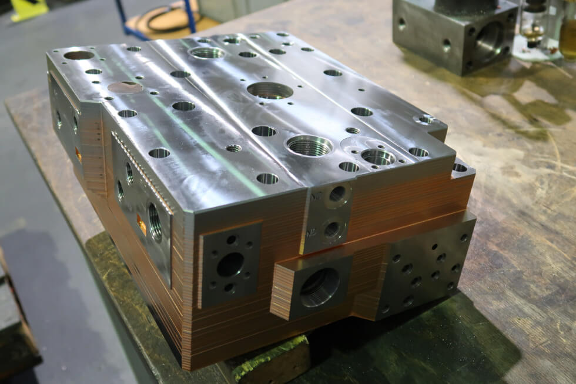
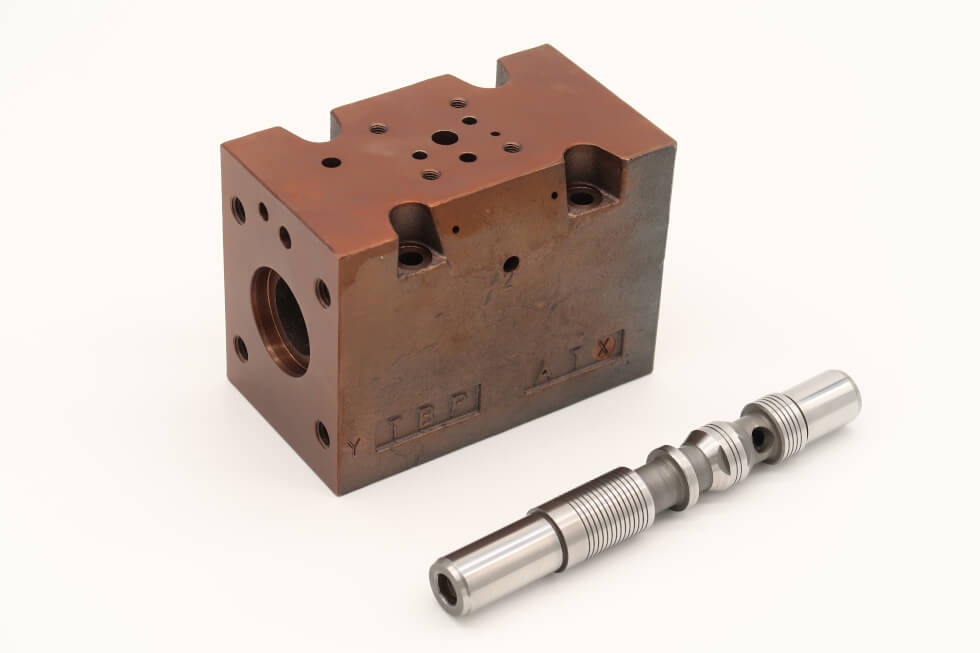
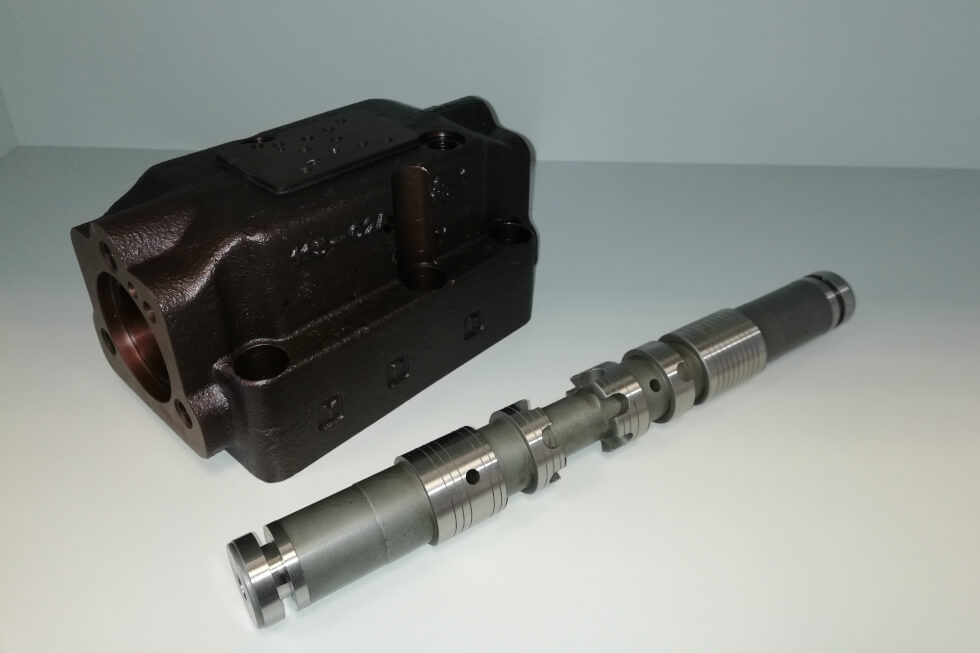
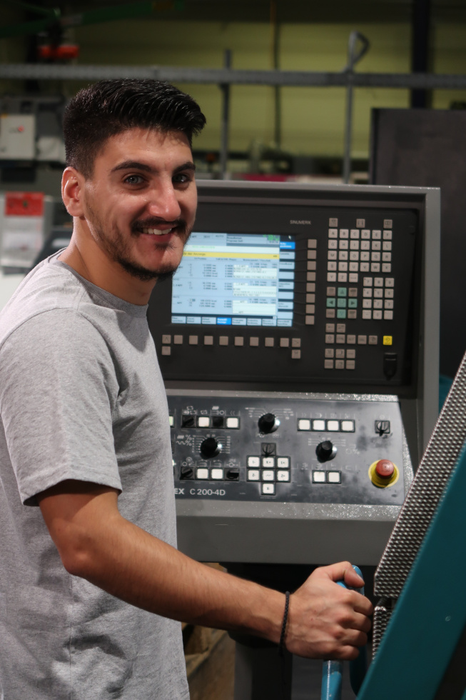
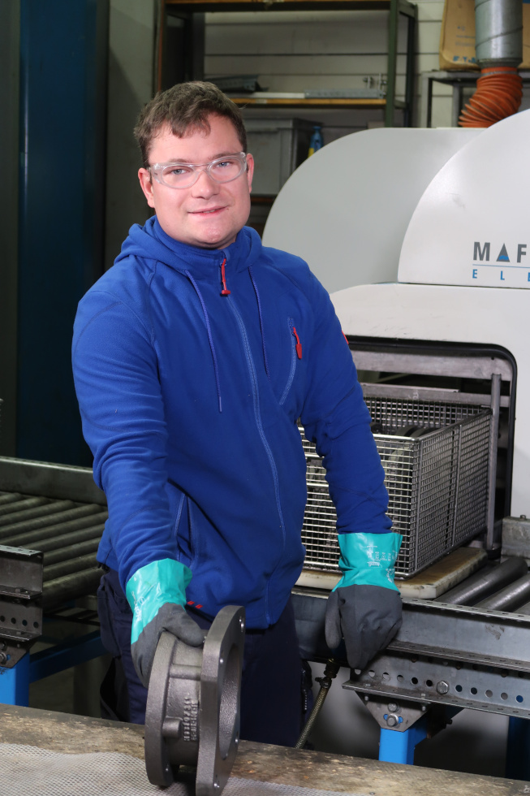
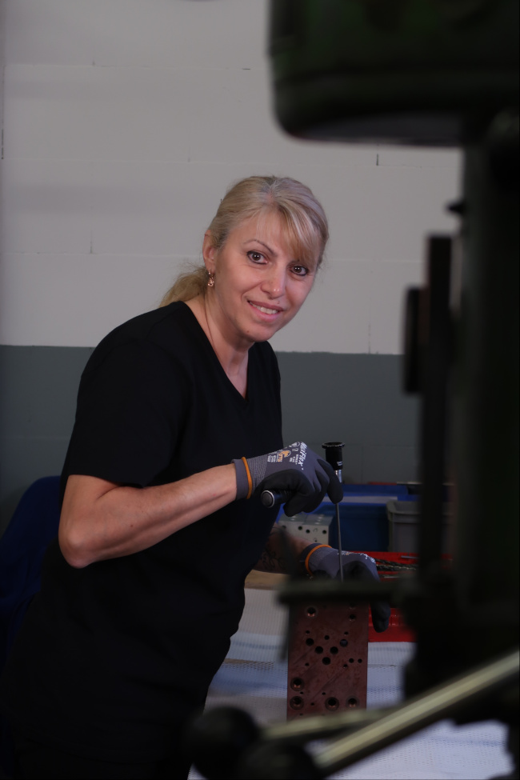
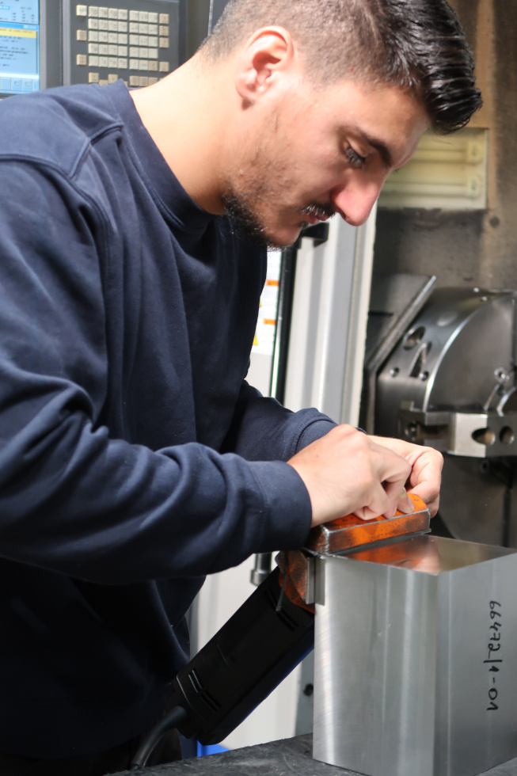
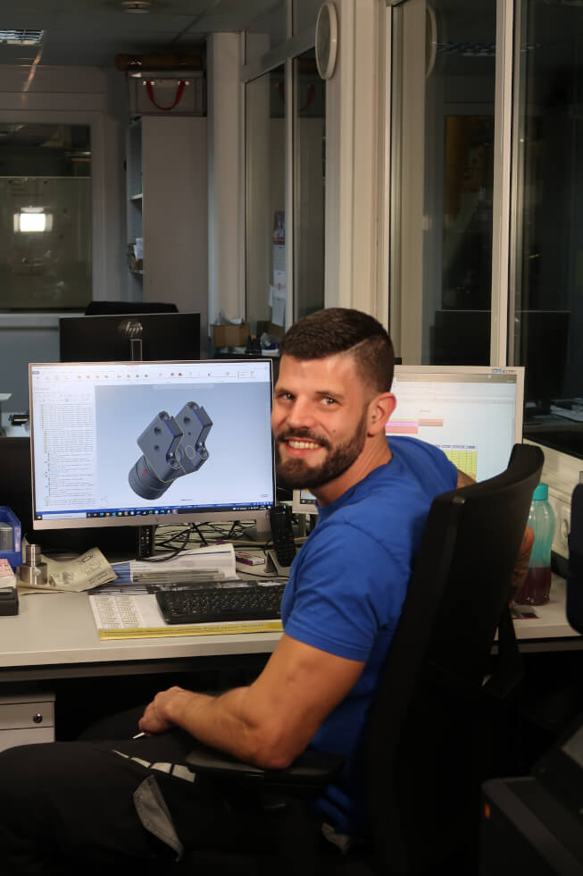

Einzel- und Serienteile
Hohe Genauigkeiten
Wir beliefern aktuell in hohem Volumen namhafte deutsche Maschinenbauunternehmen und sind es daher gewohnt, komplexe Teile sowie hohe Genauigkeiten und sehr feine Oberflächengüten anzufertigen.


Teilespektrum
Unser aktuelles Teilespektrum erstreckt sich von der Bearbeitung von Montageplatten über die Anfertigung von Einzelteilen für Innenzahnradpumpen (Pumpengehäuse, Axialscheiben, Zwischengehäuse). Besonderes Know-how haben wir in der Fertigung von Ventilen im Bereich Hydraulik.
Ventilfertigung
Bei der Ventilfertigung werden Gehäuse und Kolben von uns angefertigt und mit einem kleinem Spiel zwischen Gehäuse und Kolben von wenigen μ gepaart. Dabei sind für uns scharfkantige Steuerkanten an Gehäuse und Kolben selbstverständlich.






Bedarf an Lohnfertigungsteilen im Bereich Drehen, Fräsen, Honen, Schleifen oder Brünieren?
Wir bearbeiten in Rutesheim in Deutschland auf modernen CNC Maschinen von den Herstellern Heller, Index, DMG, Heckert, Stama, Spinner und Grob.
Drehen:
Durchmesser 10 bis 280, Länge bis 450mm, je nach Durchmesser
Drehen 4 Kant 320x250x300 max.
Schleifen:
- Rund bis D160, 400mm lang
- Flach
Fräsen 3,4,5 Achs:
1000x400x400 max.
Honen:
bis D 35